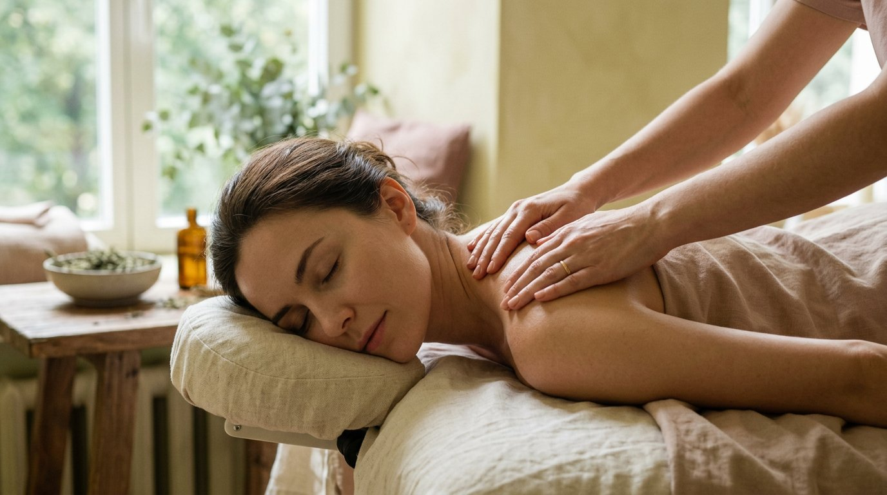

РИТУАЛ 01 40 МИН
Тихая опора
Расслабляющий массаж спины. Мягко отпускаем накопленное напряжение, возвращаем лёгкость плечам и ощущение, что можно выдохнуть.
2 600 ₽

КАМЕРНОЕ ПРОСТРАНСТВО В МОСКВЕ
Здесь время замедляется, а мысли затихают.
Пространство, где каждое прикосновение
возвращает вас к самому себе.
бережно · спокойно · только для вас
МАГИЯ КАСАНИЯ
Отложить спешку. Почувствовать опору. Позволить плечам опуститься, а дыханию — стать глубже. Я создала это место, чтобы вы могли ненадолго перестать быть сильной для всех и просто побыть собой.
Познакомиться с ритуалами ↘ВАШЕ ВРЕМЯ ДЛЯ СЕБЯ
Расслабляющий массаж спины. Мягко отпускаем накопленное напряжение, возвращаем лёгкость плечам и ощущение, что можно выдохнуть.
Расслабляющий массаж всего тела. Час, в котором не нужно никуда спешить: только тёплое внимание, плавный ритм и глубокий отдых.
ЕЩЁ НЕМНОГО ВРЕМЕНИ ДЛЯ СЕБЯ
Короткая пауза для зоны, которой особенно нужна забота: спины, плеч или стоп. Перед встречей обсудим ваши пожелания и выберем бережный фокус.
Продолжительный расслабляющий массаж всего тела — больше времени, чтобы привыкнуть к покою, отпустить спешку и остаться в мягком, плавном ритме.
Больше времени для спины и плеч — без спешки и резких переходов. Спокойный ритуал, чтобы дать напряжённым участкам внимание и позволить телу расслабиться.
Новые форматы — идеи для обсуждения. Длительность и стоимость подтвердим лично до записи.
Массаж — это бережная забота о самочувствии, не медицинская услуга.
Пусть мир немного
подождёт. Вы — нет.
МАЛЕНЬКОЕ НАПОМИНАНИЕ О ВАЖНОМ
МИКРО-ПАУЗА · ПРАКТИКА СЕЙЧАС
КОРОТКАЯ ПРАКТИКА · В СВОЁМ РИТМЕМягкая практика дыхания, чтобы немного замедлиться. Не нужно дышать глубже или «правильно» — просто следуйте за подсказкой и остановитесь, когда захочется.
Если появится дискомфорт, дышите обычно и завершите упражнение.
02 — ВАШ СЛОТ ПОКОЯ
Оставьте заявку — я лично подтвержу удобное время. После записи можно подключить Telegram, чтобы не потерять детали.
БОЛЬШЕ ПОВОДОВ ВЫДОХНУТЬ
После каждого визита — отметка в вашей карте заботы. На пятую встречу вас ждёт особенный бонус. А для первого знакомства промокод ПЕРВЫЙВЫДОХ — скидка 10%.
ЗАПИСКИ О ЗАБОТЕ
Небольшие практики, к которым можно вернуться в любой день.
Вдохните спокойно на четыре счёта. Выдыхайте на шесть. Повторите несколько раз — без усилий и ожиданий.
Заметьте, где тело соприкасается с поверхностью. Позвольте весу стать чуть тяжелее. Вы уже здесь.
На выдохе мягко опустите плечи. Не исправляйте осанку — просто дайте телу разрешение расслабиться.
НЕБОЛЬШАЯ ПРОВЕРКА СЕБЯ
Не анализируйте — выберите первое, что откликается.
Ваше состояние — уже достаточная причина позаботиться о себе.
МИНИ-ПАУЗА · ИНТЕРАКТИВ
Выберите то, что ближе — здесь нет неправильного ответа.
КАРТОЧКА ТИХОЙ ПОДДЕРЖКИ
«Не нужно заслуживать отдых.»
ВАША ПАУЗА НАЧИНАЕТСЯ
Я скоро свяжусь с вами, чтобы подтвердить время. Подключите Telegram — там удобно получать детали и напоминания.
Открыть Telegram ↗